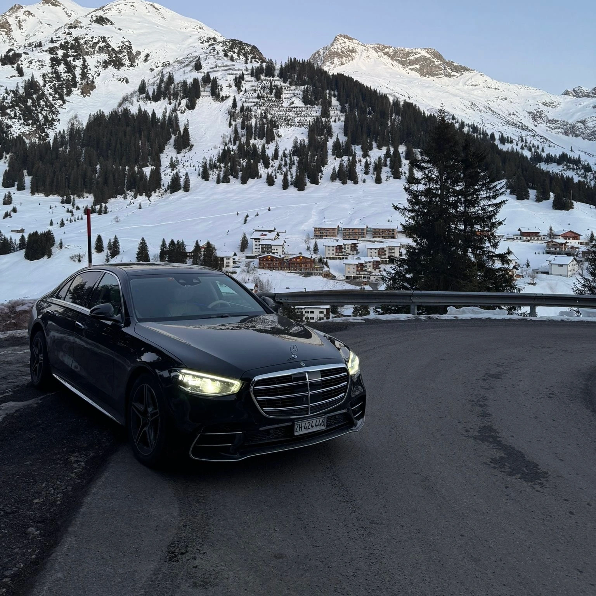

Zuverlässige Transfers zum WEF Davos 2026 – vom Flughafen Zürich bis zu allen Hotels & Eventlocations.
Das World Economic Forum in Davos stellt höchste Anforderungen an Sicherheit, Timing, Streckenplanung und Protokoll. Während der WEF-Woche sind Zufahrten eingeschränkt, Sicherheitszonen aktiv und nur erfahrene Chauffeure kennen die realen Bedingungen. Veloura Transfers bietet einen speziell für das WEF entwickelten Premium-Chauffeurservice für Delegationen, Ministerien, CEOs und internationale Corporate Teams.
Veloura Transfers chauffiert seit Jahren Delegationen zum WEF. Unsere Fahrer kennen Streckensperrungen, Checkpoints, Sicherheitszonen & diplomatische Abläufe.
Diskrete, geschulte Chauffeure mit langjähriger Erfahrung im Umgang mit hochrangigen internationalen Gästen und Regierungsteams.
4MATIC, Schneeketten, Winterpakete und Fahrer mit echter Schnee- und Bergfahrpraxis für maximale Sicherheit auf Davos’ Steigungen.
Unsere Chauffeure kennen die Zufahrtsmöglichkeiten zu AlpenGold, Belvédère, Seehof, Ameron, Hilton Garden Inn & privaten Chalets während der WEF-Woche.
Permanente Erreichbarkeit für Last-Minute-Anpassungen, verschobene Meetings, veränderte Sicherheitsrouten und Side Events in Davos & Klosters.
Nonstop Transfers von ZRH, Privatjet-Terminal & GAC nach Davos. 2 Stunden Fahrtzeit, Meet & Greet, Flight-Tracking, Winterroutenplanung.

Luxus, Komfort und Stil – entdecken Sie unsere exklusiven Mercedes-Modelle für Business, Events und private Transfers.
Komfort muss nicht teuer sein – entdecken Sie unsere preisbewusste Fahrzeugflotte für stilvolle, sichere und bequeme Fahrten in der ganzen Schweiz.
Unsere Economy-Fahrzeuge bieten dieselbe Pünktlichkeit und Qualität wie unsere Limousinen, nur zu einem günstigeren Preis – perfekt für Geschäftsreisende, Familien und alle, die klug sparen wollen.
Unsere Chauffeurleistungen wurden speziell für das WEF entwickelt – präzise, diskret und perfekt abgestimmt auf Delegationen, CEOs, Ministerien und Corporate Teams.
Direkttransfers von ZRH, VIP GAC Terminal & Privatjet-Lounges.
Optimierte Fahrten zu Sicherheitszonen & Haupteingängen.
Transfers zu AlpenGold, Belvédère, Seehof, Ameron & Hilton Garden Inn.
Betreuung großer Business- und Regierungsdelegationen.
Diskrete Fahrer mit Protokoll- & Sicherheitserfahrung.
Ganztägige Chauffeure für Meetings & Side Events.
24/7-Fahrbereitschaft für Abendprogramme & Networking.
Fahrten zu exklusiven Veranstaltungen außerhalb Davos.
Buchen Sie Ihren exklusiven Chauffeurservice für das World Economic Forum Davos 2026 – inklusive Transfers vom Flughafen Zürich, Privatjet-Terminal, Hotels und Eventlocations. Diskret, pünktlich, winterfest und rund um die Uhr verfügbar.
Während des World Economic Forum gelten in Davos strenge Sicherheitsregeln, spezielle Zugangszonen sowie eingeschränkte Routen. Dieser Überblick hilft Ihnen, die wichtigsten Regelungen und Akkreditierungen (AA, AB, Hotel-Badges, Red Zone) zu verstehen – damit Ihr Transfer reibungslos verläuft.
Mit Hotel-Stickern und Fahrer-Badges können unsere Chauffeure gesicherte Hotels wie AlpenGold und Belvédère Steigenberger anfahren.
Mit Hotel-Badges kann die Promenade 101 (The Loft / Migros Supermarkt) passiert werden. Von der Migros-Garage sind das Hilton Garden Inn und das Kongress Hotel erreichbar.
Hotel-Sticker und Fahrer-Badges erlauben keinen Zugang zur Restricted Access Zone (Red Zone).
Die Red Zone umfasst u. a. Hertistrasse, die abgesperrte Promenade beim Congress Center, das Kongress Hotel und alle Eingänge des Congress Centre.
Für Fahrten in die Red Zone benötigen Gäste AA- oder AB-Sticker – diese müssen vom Kunden direkt beim WEF beantragt werden.
AA-Sticker (für Regierungsdelegationen) bieten den höchsten Zugang, inklusive Hertistrasse und Kurpark-Tunnel zum Congress Center.
Der Davos Heliport ist ebenfalls nur mit AA/AB-Zugängen erreichbar.
In offiziellen Wartezonen müssen Fahrer im Fahrzeug bleiben und der Motor muss ausgeschaltet sein.
Hotel-Badges erlauben nur Absetzen & Abholen – Fahrer dürfen nicht parken oder Gäste in der Lobby abholen.
Wenn Gäste nicht rechtzeitig bereitstehen, müssen Chauffeure erneut die Hotelschleife fahren, was während des WEF länger dauern kann.
Fahrzeuge ohne Akkreditierung müssen Gäste weiter entfernt vom Congress Center oder anderen WEF-Bereichen absetzen.
Ja. Der Zugang zur Red Zone und zum Congress Center ist ausschließlich mit AA- oder AB-Stickern möglich. Diese müssen direkt vom World Economic Forum beantragt werden – wir können sie nicht im Namen des Gastes ausstellen.
Ohne Zutrittssticker dürfen Fahrzeuge die Red Zone nicht befahren. In diesem Fall setzen wir Sie an erlaubten Punkten wie der Migros Garage oder Promenade 101 ab – wenige Gehminuten vom Congress Center entfernt.
Die reguläre Fahrzeit beträgt ca. 2 Stunden. Während des WEF können aufgrund von Sicherheitskontrollen, Wetter und Sperrungen Verzögerungen entstehen. Unsere Chauffeure wählen stets die schnellste verfügbare Route.
Für das World Economic Forum empfehlen wir winterfeste Fahrzeuge wie Mercedes S-Klasse, V-Klasse, GLS, GLE, BMW X7 sowie Sprinter für größere Delegationen – alle mit 4MATIC und Winterpaket.
Ihr Chauffeur empfängt Sie direkt im GAC / General Aviation Center. Wir bieten Flight-Tracking, persönliche Betreuung und schnellen Zugang zum Fahrzeug, ohne Wartezeiten oder Umwege.
Ja. Während des WEF bieten wir einen 24/7 Chauffeurservice – ideal für späte Meetings, Galas, Side Events und Private Driver Einsätze (8h / 10h / 12h).
Alle entscheidenden Informationen für das World Economic Forum Annual Meeting 2026 – Themen, Teilnehmer, Anreise, Davos Infrastruktur, Hotels, Medien & offizielle Ressourcen.
Das WEF Davos 2026 konzentriert sich auf globale Herausforderungen, Innovationen, geopolitische Entwicklungen und die wirtschaftliche Zukunft.
Das WEF bringt weltweit führende Entscheidungsträger aus Wirtschaft, Politik, Wissenschaft und Medien zusammen.
Davos verwandelt sich während des WEF in eine hochgesicherte internationale Eventzone. Das Kongresszentrum ist der zentrale Veranstaltungsort.
Durch die grosse internationale Nachfrage sind effiziente und sichere Transfers nach Davos besonders wichtig.
Während des WEF sind hochwertige Unterkünfte entscheidend für Komfort, Sicherheit und effiziente Meetings.
Verifizierte Informationen, Pressemitteilungen und Downloads rund um das World Economic Forum 2026.